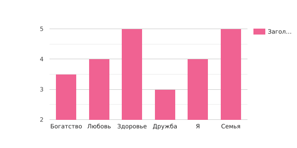

Результат
Первая диаграма будет по первому вопросу. Сам вопрос такой:
Какие ценности для Вас самые главные?
Система оценивания
- – Не имеет никакого значения
- – Имеет небольшое значение
- – Имеет определенное значение
- – Важно
- – Очень важно
1 - Богатство
2 - Любовь
3 - Здоровье
4 - Дружба
5 - Я

Вторая диаграма будет по первому вопросу 2 части.В вопросе мы спрашиваем какие ценности вы находите в себе. От 1 до 5

Эта диаграма по второму вопросу 2 части. В ней содержится такой вопрос: 2. Какие ценности хотели бы видеть у себя? От 1 до 3

Следующие диаграмы будут попорядку вопросов:
3. Какие ценности главные для Вас? Выберите от 1 до 4 ответов

4. Какие ценности менее важны для Вас? Выберите от 1 до 3

5. Какие ценности не привлекают в человеке? Выбери от 1 до 3

6. Расставьте ценности от самого главного (номер 1) и менее важному (номер 14)

7. Какая категория вам ближе?
1) витальные — жизнь, здоровье, благополучие;
2) моральные — добро, любовь, честь, уважение;
3) социальные — семья, дисциплина, богатство, патриотизм;
4) религиозные — бог, вера;
5) политические — законность, конституция, мир;
6) эстетические — красота, стиль, гармония